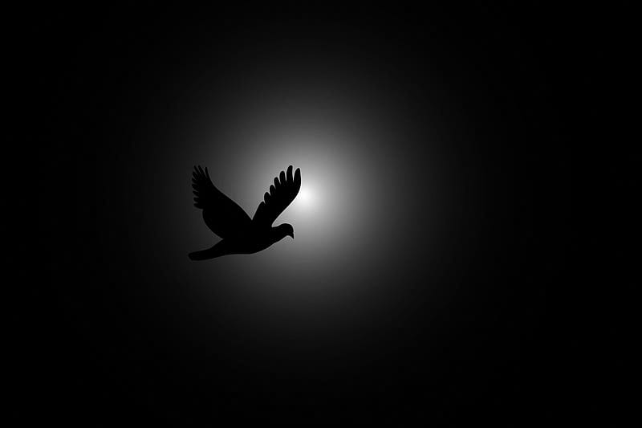
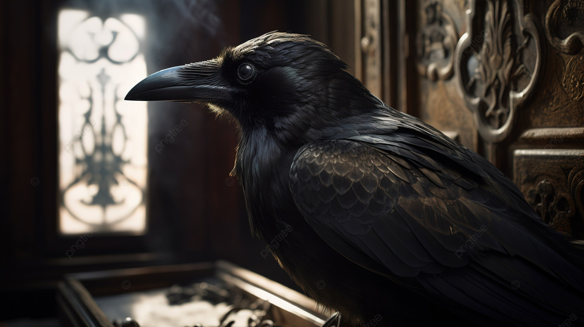

In the shadowed enclave of the Ravens' Lament, we
gather—annexing together a fractured chorus of whispered
tales, draped in the ebony plumes of avian sentinels. Within this cryptic
symphony, their cadence unfolds, an intricate dance upon the precipice of
despair.
This book cradles the past nature, the state of bygone deeds that strive
to be renewed.
Ravens, harbinger of Omens, weave the Narratives of Betrayal, Each Ebony Feather a Clandestine witness to the Treacherous Dance of Deceit. The Labyrinth of our Stories, a tapestry of broken vows, etched in the obsidian ink of fallen trust.
Cacophonous caws echo through the Desolate Hollows, a Requiem of Empathic Shadows. Within the Raven's gaze, the weight of shared sorrow bears witness to the Fractured Souls dwelling in the Penumbra. Ravens keep themselves apart, a grim sight.
In this stygian theater, trust is a fragile wisp, fluttering in the breath of the inky tempest, a vibrating Quartz. We wear the shroud of trustworthiness, though it is but a gossamer Veil, easily torn by the Talons of Duplicity and ask the Question: "Can we weave a tapestry of fidelity that stands the test of time?".
Respect, a discordant chord in this macabre sonata, where fractured truths
resonate in the hollow c
The Ravens tell tales in their eerie tongue, a corvid canticle of secrets veiled in the Velvet Folds of the Night. A dance of deceit, where every tale-tell whispers malevolent truths, and the feathers of the fallen weave tales of clandestine darkness. Calumny consumes the shallow mind and distrust fills the heart.
Our Raven-forged symphony resonates in the cryptic chambers, a requiem woven from the frayed threads of our collective agony bound together as strong as Zirconium. In the darkened cadence, we find solace, as the Ravens bear witness to our collective anguish. Symphony played with strings of sorrow, with nothing to bear.
Gossip, the venomous serpent slithering through the marrow of our enclave. A venom distilled in the crucible of distrust, where each hissing whisper corrodes the bonds that tether us to this realm of shadows.
Within an Aqeous Gentle Embrace, Empathy becomes a Current
that ripples through the
The state of meditative flow, not in zealous ecstasy, but in the despondent river of Stygian ink. A languid drift through the abyss, where the Ravens guide us with wings dipped in the sorrows of forgotten dreams. The stupor dissolves the pudding wherein the cessation of zeal strikes cold on the lathe of happiness.
Tales told not for inspiration but as dirges in the twilight. Each narrative a jagged shard, driven through the heart of hope, a lamentation that reverberates through the haunted corridors of our collective despair.
Within the Raven's shadow, healing emerges as a phantom flicker—a spectral dance amidst the ruins. In the embrace of obsidian feathers, we find a modicum of solace, a fragile bloom in the graveyard of broken dreams. We ask, "Can a gauze of meek bonds heal a tearing skin of sorrow?"
United, we stand as the Everlasting Covenant Brotherhood, for that is
where our actions guard against the corrosive winds of betrayal and build
the strength to mend the gossamer veil of trust, bound together by the
In this shrouded labyrinth, Friendship emerges as an elusive specter, a
shadowy companion whispering echoes of camaraderie. Like
And lo, did you fathom that
In the annals of bygone eons, we glean inspiration from the sepulchral
alliance betwixt
It is time for change. The nascent Ravens, custodians of a reborn era, embark on a journey to inscribe a new chronicle, laying the foundations for an unwritten tome that shall bury the echoes of the old. With quills aflame with innovation and wings unfurled in newfound liberty, they embrace the ethos of unbound thought. No longer shackled by indoctrination, their pens carve the arc of fresh ideas and actions, forging a destiny free from the chains of antiquity.
